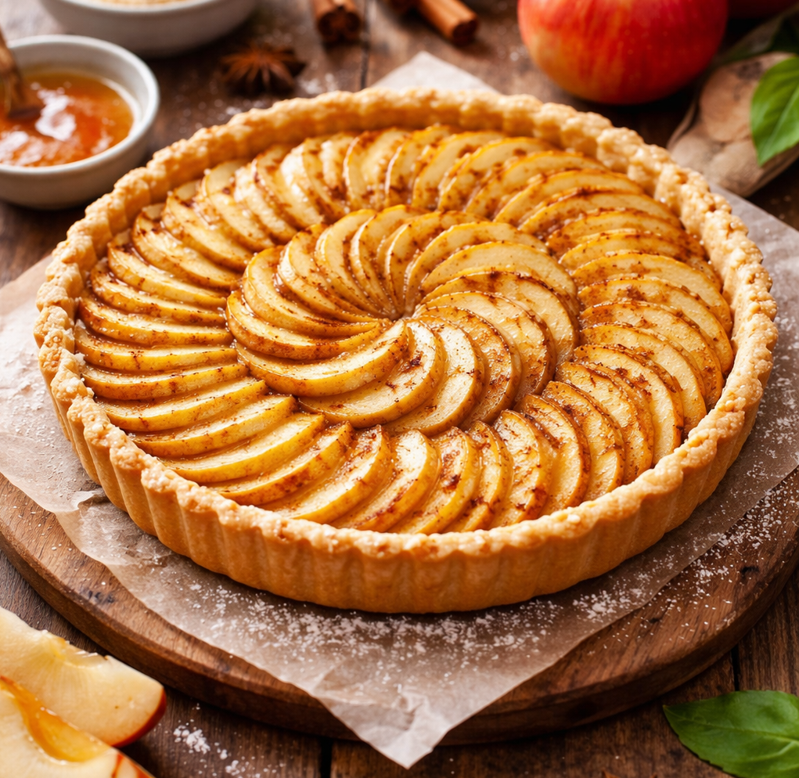

Recette de la Tarte aux pommes
Ingrédients
- 4 Pommes
- 1 pate feuillé
- 30g Beurre
- 30g Sucre
Etapes de préparation
- Préchauffer le four à 180°C
- Éplucher et couper les pommes en lamelles
- Étaler la pâte dans un moule
- Disposer les pommes et saupoudrer de sucre
- DAjouter des noisettes de beurre
- Enfourner pendant 40 minutes